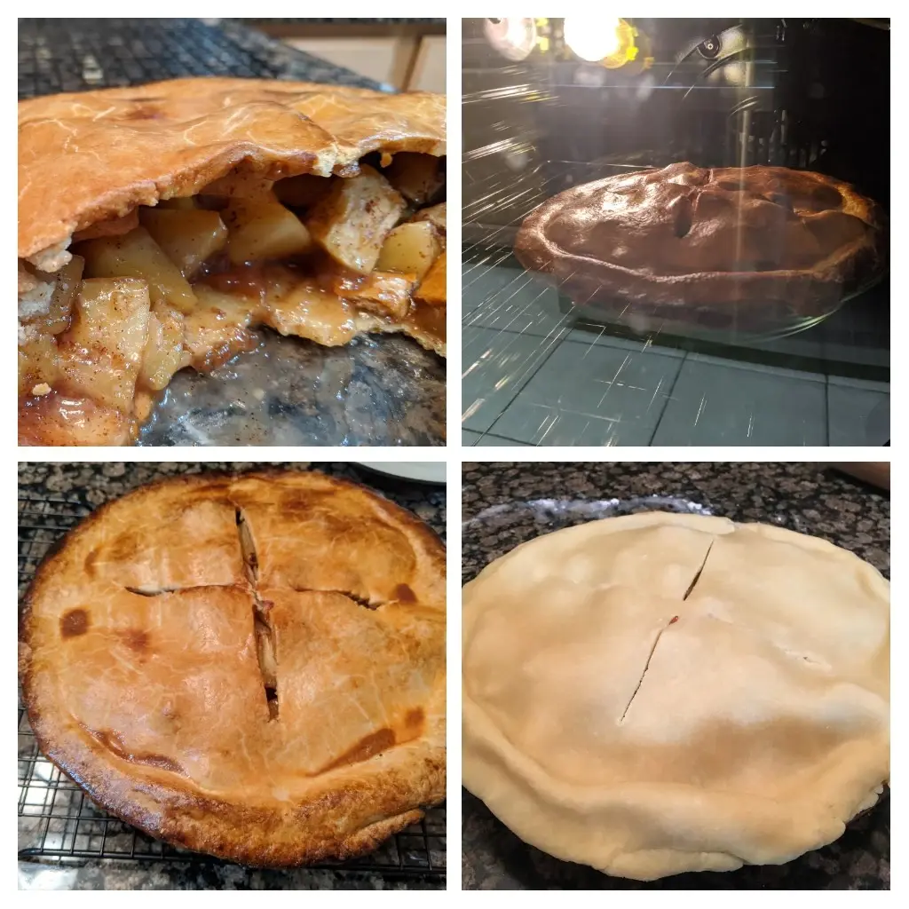

Apple Pie

- ⏲️ Prep time: 30 min
- 🍳Cook time: 45 min
- 🍽️ Servings: 8
Ingredients
Metric Units
Filling
- 900 g (4-5) golden delicious apples
- 15 g (1 tbsp) lemon juice
- 50 g white sugar
- 65 g brown sugar
- 5 g (1 tsp) cinnamon
- 1-2 g nutmeg
- 15 g cornstarch
- 15 g ice water
- 225 g (2 sticks) cold unsalted butter, diced
Crust
- 350 g flour
- 5 g salt
- 30 g white sugar
- 225 g (2 sticks) butter
- 50-100 ml ice water
Egg Wash
The egg wash is optional.
- 1 egg
- 15 g water
Directions
- Peel and cut the apples into 3-5 cm strips
- Put the apples in a bowl and mix in the lemon juice, sugar, cinnamon, nutmeg, and cornstarch and let it sit for 15 mins to release water
- Transfer the filling mixture to a sauce pan and reduce the liquid over medium to low heat for around 15 mins, stirring regularly, then turn off the gas
- While the filling is sitting / reducing, start the crust by putting the flour, salt, sugar, and pieces of butter in a food processor
- Run the food processor until it resembles a coarse sand (5-10 seconds) then start dripping in the ice water until the mixture starts to chunk together
- You’ll know when it’s done if you can pinch the dough with your hand and it sticks together
- Preheat oven to 180°C then start making the pie crust
- Cut the dough in half and roll both halves out with a rolling pin until they are big enough to cover your pie pan (around 9 inch diameter)
- Put the bottom half dough into the pie pan and cut off the excess dough with a knife
- Dump the sauce pan full of the filling into the pie pan and even it out
- Cover the pie filling with the top dough and fold over and tuck in the excess crust
- Use a fork or your fingers to pinch down the top crust to the bottom crust so you don’t have air gaps
- Optionally you can now brush on the egg wash to make the crust get a shiny golden brown color when it cooks
- Cut a few slits in the top crust with a knife to give it a nice design and allow for air to release
- Bake 45 minutes at 180°C or until the crust is brown to your liking and the apples are bubbling inside
US Customary Units
Filling
- 30 oz (4-5) golden delicious apples
- 1 tbsp lemon juice
- ¼ cup white sugar
- 1/3 cup brown sugar
- 1 tsp cinnamon
- ¾ tsp nutmeg
- 2 tbsp cornstarch
- 1 tbsp ice water
- 1 cup (2 sticks) cold unsalted butter, diced
Crust
- 2 ¾ cups flour
- 1 tsp salt
- 2 ½ tbsp white sugar
- 1 cup (2 sticks) butter
- ¼-½ cup ice water
Egg Wash
The egg wash is optional.
- 1 egg
- 1 tbsp water
Directions
- Peel and cut the apples into 1-2 inch strips
- Put the apples in a bowl and mix in the lemon juice, sugar, cinnamon, nutmeg, and cornstarch and let it sit for 15 mins to release water
- Transfer the filling mixture to a sauce pan and reduce the liquid over medium to low heat for around 15 mins, stirring regularly, then turn off the gas
- While the filling is sitting / reducing, start the crust by putting the flour, salt, sugar, and pieces of butter in a food processor
- Run the food processor until it resembles a coarse sand (5-10 seconds) then start dripping in the ice water until the mixture starts to chunk together
- You’ll know when it’s done if you can pinch the dough with your hand and it sticks together
- Preheat oven to 350°F then start making the pie crust
- Cut the dough in half and roll both halves out with a rolling pin until they are big enough to cover your pie pan (around 9 inch diameter)
- Put the bottom half dough into the pie pan and cut off the excess dough with a knife
- Dump the sauce pan full of the filling into the pie pan and even it out
- Cover the pie filling with the top dough and fold over and tuck in the excess crust
- Use a fork or your fingers to pinch down the top crust to the bottom crust so you don’t have air gaps
- Optionally you can now brush on the egg wash to make the crust get a shiny golden brown color when it cooks
- Cut a few slits in the top crust with a knife to give it a nice design and allow for air to release
- Bake 45 minutes at 350°F or until the crust is brown to your liking and the apples are bubbling inside
Contribution
- mfed3 - xmr:
48eEMdYtCQaV5wY7wvmxK6jCxKkia9dgpNTMNT1do7RLWXCwWDgSKjN3kiZ6yHbAuAXWgDGN6imnGT9NPeHWD7zX9hSyHu2